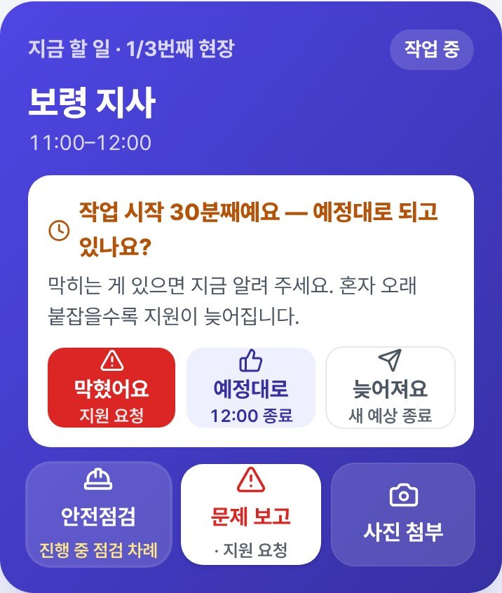
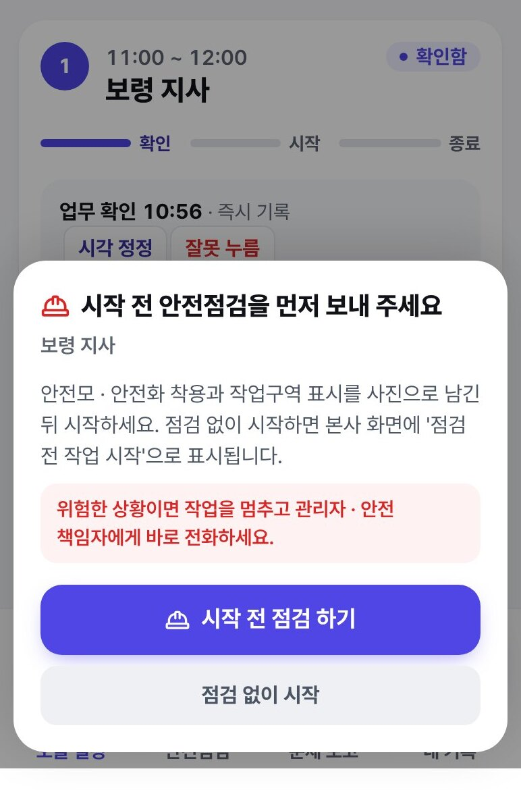
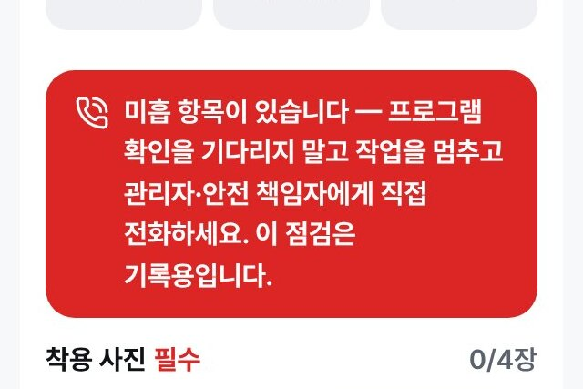
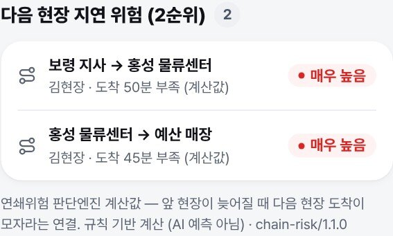
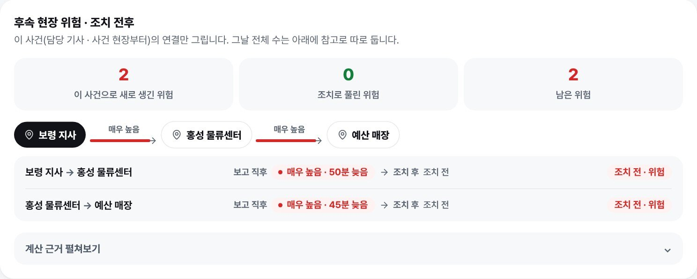
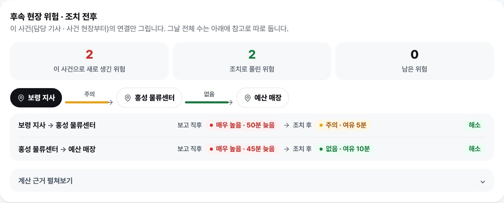

THREE FIELD PROBLEMS · ONE WORKING PROGRAM
현장에서 생긴 문제가
다음 현장까지 번지기 전에.
현장 기록으로 다음 현장 지연을 자동 계산하고,
본사가 먼저 할 일을 알려 줍니다.
 AI 연출 사진
AI 연출 사진 AI 연출 사진
AI 연출 사진 AI 연출 사진
AI 연출 사진신청기술복수 현장 업무 위험관리 AX 시스템
관련 특허10-2026-0173957출원 · 등록 아님
프로그램v0.6.1현장기사 휴대폰 + 관리자 PC
THREE FIELD PROBLEMS · ONE WORKING PROGRAM
현장 기록으로 다음 현장 지연을 자동 계산하고,
본사가 먼저 할 일을 알려 줍니다.
AI 연출 사진AI 연출 사진AI 연출 사진한 장으로 보는 기술
작업 시작 · 종료
문제 보고
안전점검
1연락 없이 늦어짐
2안전점검 빠짐 · 미흡
3다음 현장 지연특허 핵심
먼저 볼 일
지원 결정
일정 조정
조치하면 다시 계산 → 기사 휴대폰에 바로 전달
문제 1 · 초급 기술자가 혼자 오래 붙잡음
1휴대폰이 먼저 묻기

2본사도 같은 시각에 확인
3바로 지원 결정 → 기사에게
11:00 작업 시작 → 11:30 중간 확인 → ‘막혔어요’ 보고 → 지원 결정
문제 2 · 안전확인이 뒤늦게 이루어짐
1점검 없이 시작 → 먼저 묻기

2미흡 → 작업 중지 · 직접 전화

3본사 1순위로 표시

사진으로 자동 판정하지 않습니다 — 관리자가 눈으로 확인
문제 3 · 핵심 기술
프로그램 화면에서도 바로 보입니다

AI 예측 아님 · 정해진 규칙 · 같은 입력이면 같은 결과
문제 3 · 핵심 기술
보고 직후 — 홍성 50분 · 예산 45분 늦음

관리자가 홍성 13:25 · 예산 15:00으로 일정 조정
조치 후 — 여유 5분 · 여유 10분 · 남은 위험 0

근거
세 문제를 다루는 기능
다음 현장 지연 자동 계산
가상 시나리오 시험
실제 현장 사용 기록
시간 · 비용 효과 측정
효과 수치는 측정 뒤에만
심사 의견에 답합니다
아래 질문은 예시입니다 — 결과 통지서의 보완 사유 문장으로 바꿔 넣으세요
무슨 기술인가?
다음 현장에 몇 분 늦는지 자동 계산하고, 먼저 할 일을 정하는 기술2 · 5쪽차별성은?
기록만이 아니라 앞 · 뒤 현장을 이어 계산, 조치하면 다시 계산6쪽근거는?
실행 화면 41장 · 자동 시험 746개 · 특허 출원7쪽개발 가능성은?
세 문제 절차가 이미 동작 — 남은 것은 현장 실증9쪽다음 단계
AI 연출 사진1실제 현장 사례 확인
2실제 기기로 사용
 AI 연출 사진
AI 연출 사진3실제 업무 1건 기록